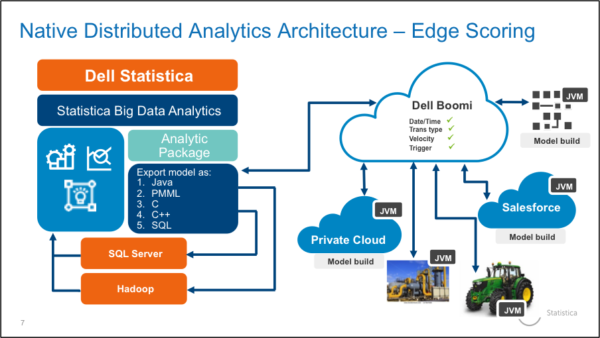

Internet of Things
Que es IoT?
The definition of the Internet of things has evolved due to convergence of multiple technologies, real-time analytics, machine learning, commodity sensors, and embedded systems. Traditional fields of embedded systems, wireless sensor networks, control systems, automation (including home and building automation), and others all contribute to enabling the Internet of things. In the consumer market, IoT technology is most synonymous with products pertaining to the concept of the "smart home", covering devices and appliances (such as lighting fixtures, thermostats, home security systems and cameras, and other home appliances) that support one or more common ecosystems, and can be controlled via devices associated with that ecosystem, such as smartphones and smart speakers. The IoT concept has faced prominent criticism, especially in regards to privacy and security concerns related to these devices and their intention of pervasive presence.